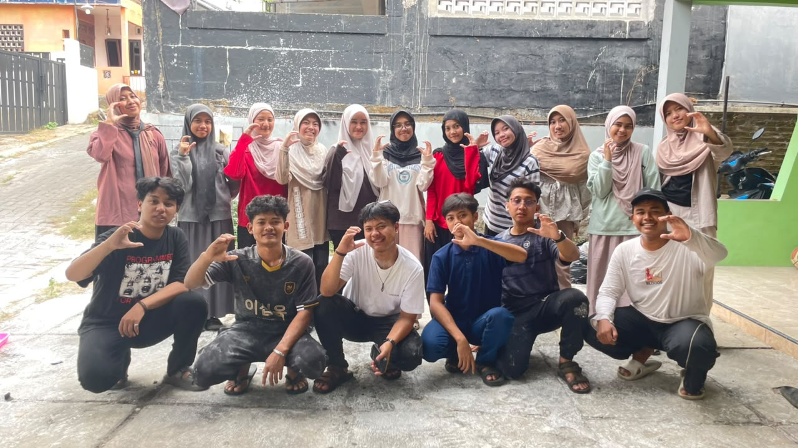
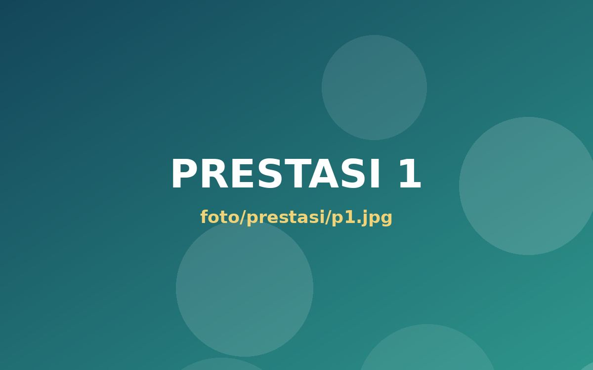
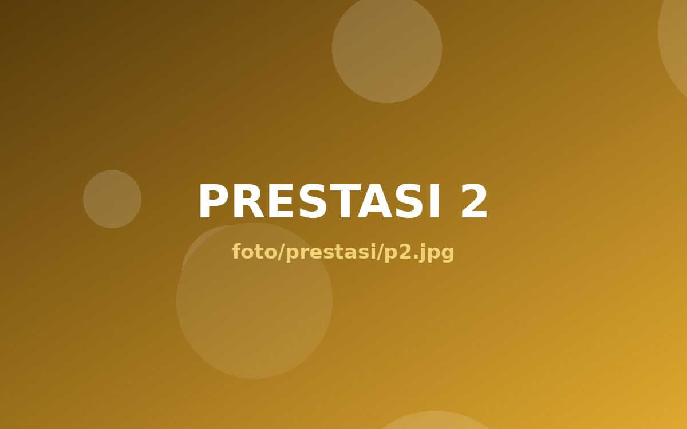
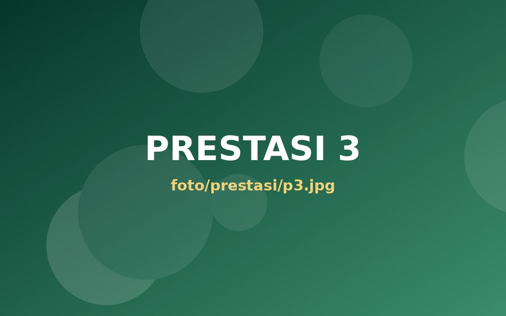
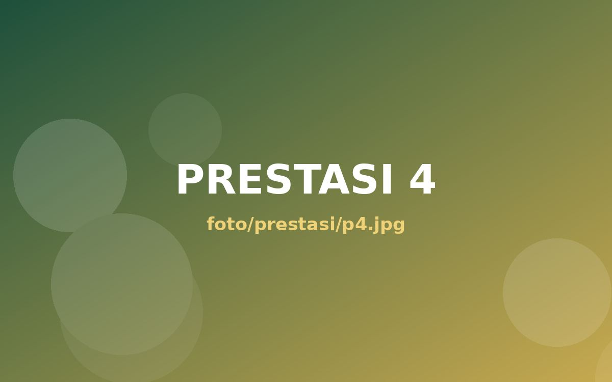
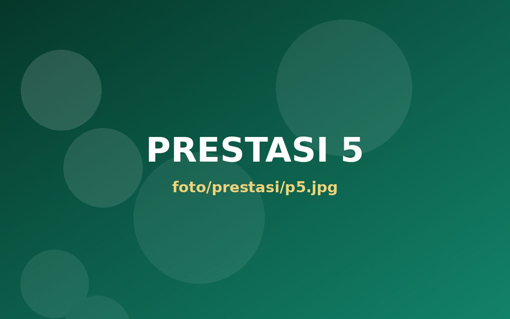
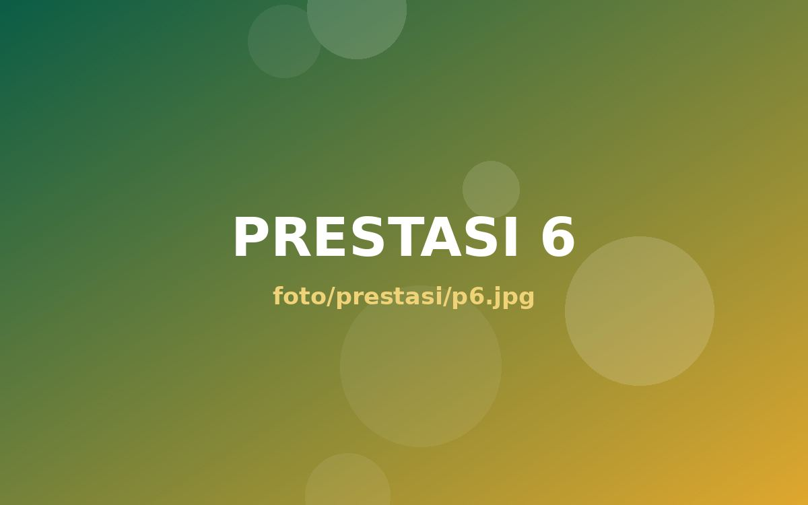

Community of Santri Scholars of Ministry of Religious Affairs
Universitas Negeri Semarang
Tentang Kami
Program Beasiswa Santri Berprestasi (PBSB) adalah program kolaborasi Kementerian Agama dengan LPDP Kementerian Keuangan untuk meningkatkan kualitas sumber daya manusia di bidang keagamaan dan pendidikan berbasis pesantren.
CSSMoRA merupakan wadah bagi mahasantri penerima PBSB untuk berkembang sebagai agen perubahan. CSSMoRA bergerak dalam bidang sosial kepesantrenan dan memegang teguh Pancasila.
Di Universitas Negeri Semarang, CSSMoRA UNNES menjadi ruang bertumbuh mahasantri untuk berkarya dan mengabdi.
Terciptanya anggota CSSMoRA yang berorientasi pada keilmuan, pengembangan dan pemberdayaan pesantren serta pengabdian masyarakat.
Ganti data di bawah ini dengan sejarah dan ketua CSSMoRA UNNES yang sebenarnya.
Pilar organisasi yang saling bersinergi mewujudkan tata kelola yang profesional dan berkelanjutan. Klik tiap divisi untuk melihat penjelasan dan anggotanya.
Jejak karya dan prestasi mahasantri CSSMoRA UNNES yang memadukan kecerdasan, integritas, dan semangat kesantrian.

Prestasi 1
Prestasi 2
Prestasi 3
Prestasi 4
Prestasi 5
Prestasi 6Setiap bingkai adalah cerita tentang semangat yang terus bertumbuh. Ganti foto di folder foto/galeri untuk memperbarui.
 Galeri 1
Galeri 1 Galeri 2
Galeri 2 Galeri 3
Galeri 3*Angka contoh, sesuaikan dengan data awardee CSSMoRA UNNES.